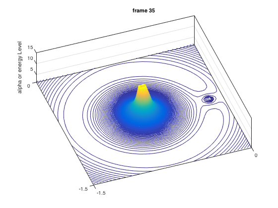

mu = 0.012;
x1 = -mu;
x2 = 1-mu;
deltaAlpha = -0.008;
startAlpha = 2;
endAlpha = 1.49;
nElem = 50;
cutOffEnergyLevel = 15;
del = 0.05;
startX=-1.2; endX=1.2;
totalLengthX = 2*endX;
x = linspace(startX,endX,nElem);
[X,Y] = meshgrid(x);
r1 = sqrt( (X - x1).^2 + Y.^2 );
r2 = sqrt( (X - x2).^2 + Y.^2 );
U = (X.^2 + Y.^2)/2 + (1-mu)./r1 + mu./r2 ;
[I,J]=find(U>cutOffEnergyLevel);
U(I,J)=cutOffEnergyLevel;
alpha = startAlpha;
nAnimationSteps =35;
nLevel = -9;
for i=1:nAnimationSteps
clf
nLevel=nLevel+10;
contour3(U,nLevel);
view(-20, 75);
hold on;
set(gca,'XTick',[1 50 100]);
set(gca,'XTickLabel',{'-1.5';'0';'1.5'})
set(gca,'YTick',[1 50 100]);
set(gca,'YTickLabel',{'-1.5';'0';'1.5'})
alpha = alpha+deltaAlpha;
title(sprintf('frame %d',i));
zlabel('alpha or energy Level');
drawnow;
pause(0.05);
end
